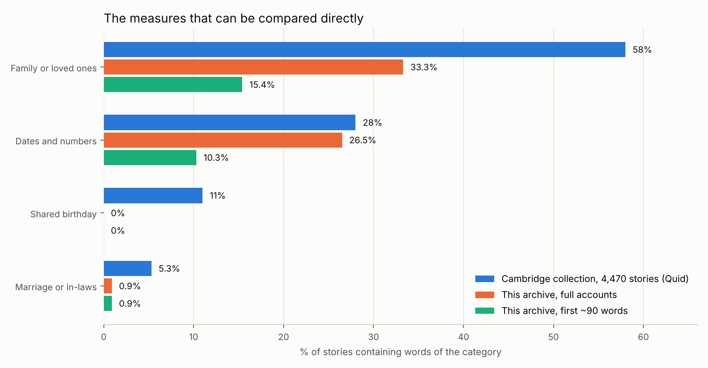
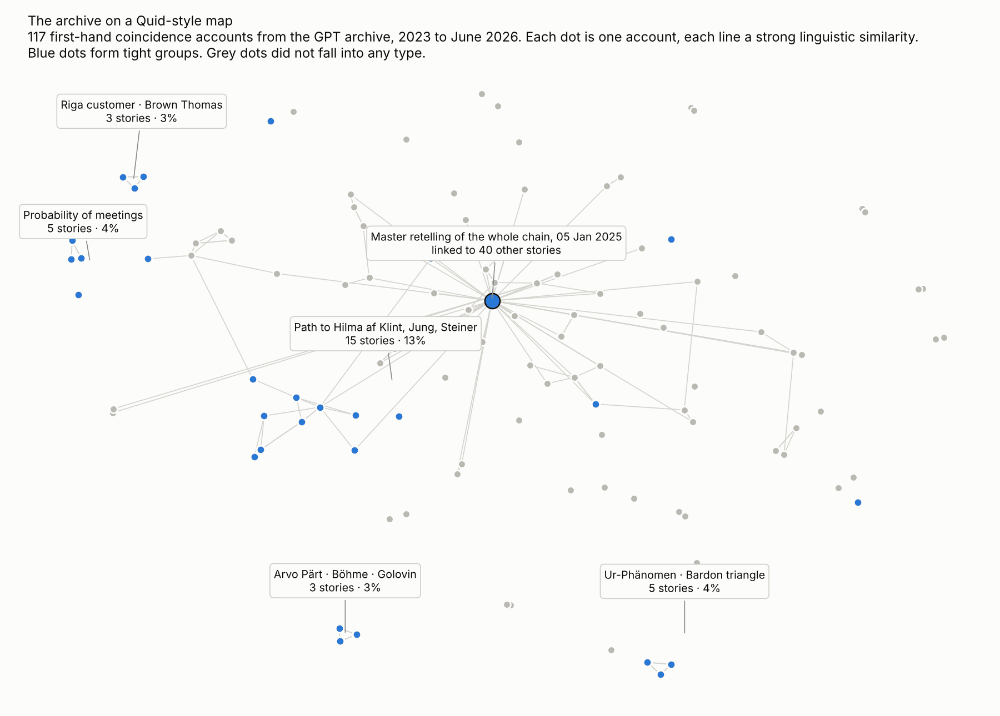

1The two studies in the book
Chapter one of Meaningful Coincidences describes two ways of counting the most common coincidences.
David Spiegelhalter, then Winton Professor for the Public Understanding of Risk at Cambridge, collected 4,470 coincidence stories. The text analytics firm Quid analysed them. 58 percent of the stories contained words related to family or loved ones. The five largest types were shared birthdays at 11 percent, books, TV, radio or news at 10 percent, holidays at 6.1 percent, meeting people in transit at 6 percent and marriage or in-laws at 5.3 percent. Stories about dates and numbers made up 28 percent. The tone was neutral in 41 percent, negative in 32 percent and positive in 25 percent.
Quid worked by language. Each story became a point. Stories with strongly similar wording were linked. The birthday stories formed the tightest group because there are only a few ways to describe finding a shared birthday.
The Weird Coincidence Survey worked differently. Participants rated how often they experienced twelve common coincidences. Analysing the meaning of a coincidence scored highest, followed by thinking of an idea and meeting it in the media, thinking of someone who then calls, and advancing in work by being in the right place at the right time.
2The archive and the method
The source is the complete ChatGPT export kept in the Codex archive, covering 2023 to 11 June 2026. It holds 1,631 conversations. Many of them are long dialogues in which coincidences are reported as they happen, often dictated by voice.
Pasted material was removed. That means AI replies, edited essays, formatted documents and three transcripts of YouTube interviews. What remains are first-hand accounts in my own words that describe something that happened. They come from 66 conversations, most of them from 2025.
The measures follow Quid. For each account I checked whether it contains words of a category, for example mother, father, daughter or family. Because my accounts are much longer than a typical submitted story, every figure is given twice. Once for the full account. Once for its first 600 characters, about 90 words, which is close to the length of a story sent to the Cambridge website. The full-text figure is an upper bound. The short figure is the fairer comparison.
Then the same kind of map was drawn. Each account became a point, accounts with strongly similar wording were linked, and the points were grouped by similarity.
Later conversations, from July to November 2026, were checked separately. Almost all later accounts were written up as edited essays and so do not pass the first-hand filter. The statistical core therefore ends in June 2026. Later episodes are discussed in section 6.
3Results

| Category | Cambridge | This archive, full | This archive, ~90 words |
|---|---|---|---|
| Family or loved ones | 58% | 33% | 15% |
| Dates and numbers | 28% | 26% | 10% |
| Shared birthday | 11% | 0 | 0 |
| Marriage or in-laws | 5.3% | 1% | 1% |
| Books, TV, news, internet | 10%* | 41% | 18% |
| Holidays and travel | 6.1%* | 19% | 10% |
| Streets, roads, meetings in transit | 6%* | 49% | 33% |
* Cluster shares in the Quid analysis, not word counts. Shown for orientation only.
Categories that do not exist in the Quid analysis
| Category | Full accounts | ~90 words |
|---|---|---|
| Dreams, half sleep, waking | 37% | 21% |
| Paintings, drawings, canvas, exhibitions | 41% | 20% |
| The body (goosebumps, trembling, tears) | 23% | 9% |
| Jung, Steiner, archetypes, the numinous | 40% | 21% |
| AI mentioned in the account | 74% | 53% |
The AI figure mostly reflects where the accounts were written. They are addressed to an AI. It is reported for completeness and should not be read as a type of coincidence.
4The map

Three things stand out.
First, most points are grey. These accounts do not settle into types. In Cambridge a shared birthday can only be told in a few ways, so such stories cluster tightly. Here almost every account is told in its own way.
Second, the tight groups that do appear are single storylines. The Riga customer seen again in Brown Thomas. A concert of Arvo Pärt bound up with Jakob Böhme and Golovin. The Ur-Phänomen group and the Bardon triangle. Attempts to calculate the probability of meetings. The path from Hilma af Klint to Jung and Steiner. The groups carry names of people and places, not names of kinds.
Third, there is a centre. The master retelling of 5 January 2025 is linked to 40 other accounts. Part of this is technical, because a long text shares vocabulary with many others. But the content agrees with the shape. It is the one account in which the whole chain is told from the beginning, and later accounts keep returning to it.
5Against the Weird Coincidence Survey
The survey items cannot be counted in my text with any precision. The table shows where each one appears in the archive, with an example.
| Survey item | Rating | In this archive | |
|---|---|---|---|
| After a coincidence I analyse its meaning | 4.04 | The archive itself is this practice. 863 messages, a Codex, published essays. | Central |
| I think of an idea and meet it in the media | 3.47 | A TV series about determinism, then an interview about dice and chance, then the series again. | Frequent |
| I think of a question and an outside source answers it | 3.32 | A question about who else documents coincidences led to your work. | Present |
| I am introduced to people who further my work | 3.19 | A curator who pointed to Hilma af Klint. Derek. Brent Pope. You. | Present |
| I advance by being in the right place at the right time | 3.37 | Entering art school in mid-life, and the curator who asked about Rothko. | Present |
| I run into someone in an out-of-the-way place | 3.09 | The customer from a Riga boutique, met twice in Brown Thomas and then on Dorset Street, 25 years later. | Signature |
| Strong emotions or sensations shared at a distance | 2.85 | Trembling hands on two consecutive mornings on Dorset Street. Tears after meeting Gerard. | Signature |
| A need is met without my doing anything | 3.19 | A lost wallet returned by a stranger with the money inside. | Present |
| I think of calling someone and they call me | 3.38 | A friend wrote for the first time in months, half an hour after a conversation that his message then echoed. | Close variant |
| Coincidence determines my educational path | 2.95 | The dream of the hidden door and the turn to painting. | Present |
| I know who is calling before I look | 2.80 | Not found. | Absent |
The archive agrees with the survey on the item that scores highest. Analysing the meaning is the core of it. It departs from the survey in what it emphasises. Telephone coincidences are almost absent. The strongest items here are meetings with people from the distant past and sensations shared with a stranger, which the survey rates in the middle or lower half.
6What looks new
Nothing here proves a cause. But four features set the archive apart from both studies, and none of them is captured by their categories.
The coincidences form a biography, not a list
Cambridge stories are independent. Here episodes are linked into chains that run for years. A dream, then a play, then Rothko. A doll, then a nickname, then Warhol and a date of death. An elephant, then a panic attack, then a man whose movement is built around the elephant. The central retelling on the map is the visible trace of this.
The image comes before the event
Dreams appear in more than a third of the full accounts and paintings or drawings in two fifths. In many of them the first element is something I made or dreamt. A painting, a sketch, a dream. The outside event arrives later and gives the image a meaning it did not have. Most survey items run the other way. A thought first, then the event that answers it within minutes or hours. Here the delay is months or years. This order was read from the accounts, not counted.
The other person is a stranger, often at the edge of society
Family words are rare. The people in the accounts are a homeless poet, a man on the steps, a stranger who returns a wallet, a figure from a shop in Riga. The meeting carries empathy more than surprise. This is close to what you call simulpathity, and the body is often the first instrument. Trembling, tears, goosebumps.
AI takes part twice
AI is where the accounts are recorded. It is also, more than once, how the next link of the chain was found. This is the pattern you noticed in my Room of 1.7 percent, and it seems relevant to the Meaningful Coincidence Hub.
Later episodes, outside the statistical core, follow the same four features. A meeting with Krister in Riga in July 2026. The woman at the water in Aglona. The elephant at the crossing and Brent Pope. The Flammarion engraving that led to your page.
7A working name
For the second feature I use a word that came to me in a dream and found its meaning through a coincidence.
Sequelism. Later events change the meaning of chapters already lived, and even how they are described. A chapter is never closed. The sequel rewrites its first page.
The archive shows this in its records as well as in its stories. A sketch titled Panic Attack in June 2023 was retitled Elephant in January 2024. The central retelling is reopened again and again as new links appear. The obvious rival explanation is hindsight, the mind finding order after the fact. The dated records exist to separate the two, by showing what was written before the later event and what was added after it.
8Limits
This is a word count, not a reading of meaning. Russian word forms were matched by stems and some matches will be wrong in both directions, though the Quid method was also linguistic. The sample is one person and 117 accounts, chosen by filters I set. The Cambridge stories come from thousands of people and were submitted, not recorded in dialogue. Tone was not measured, because simple tools are unreliable for Russian. The comparison describes a different profile. It does not test a hypothesis.
The extracted accounts and the code can be shared for the Hub, with identifying details of other people removed.